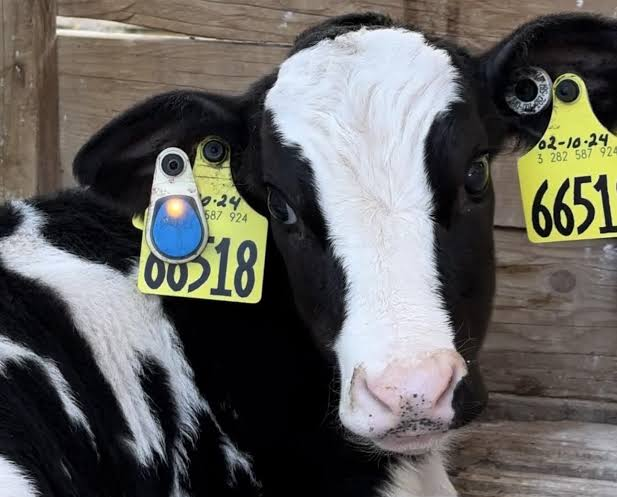
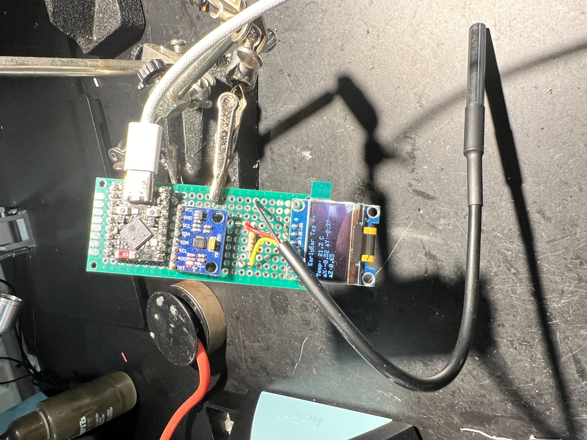
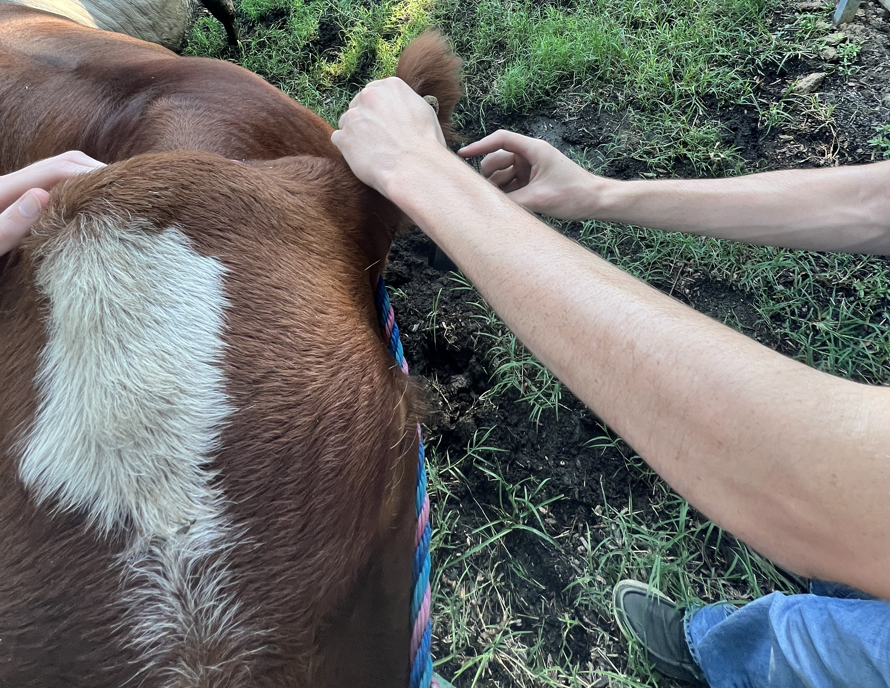
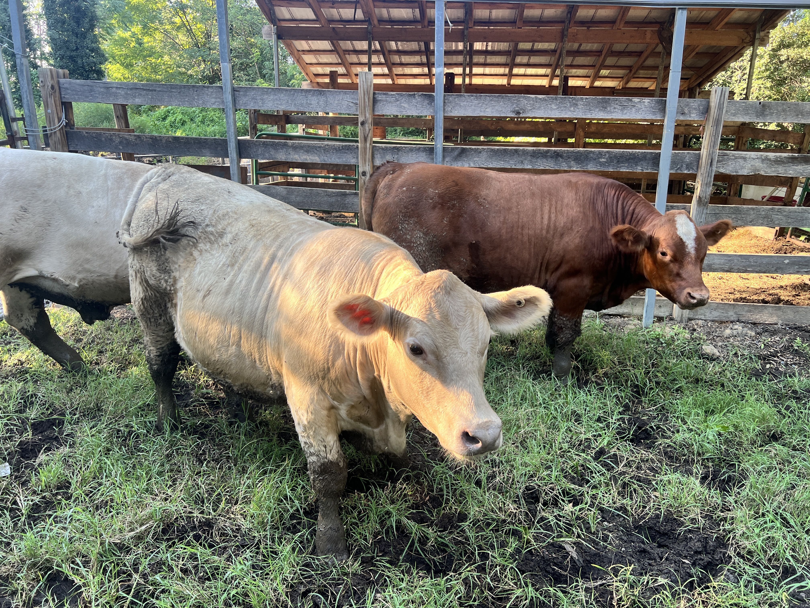
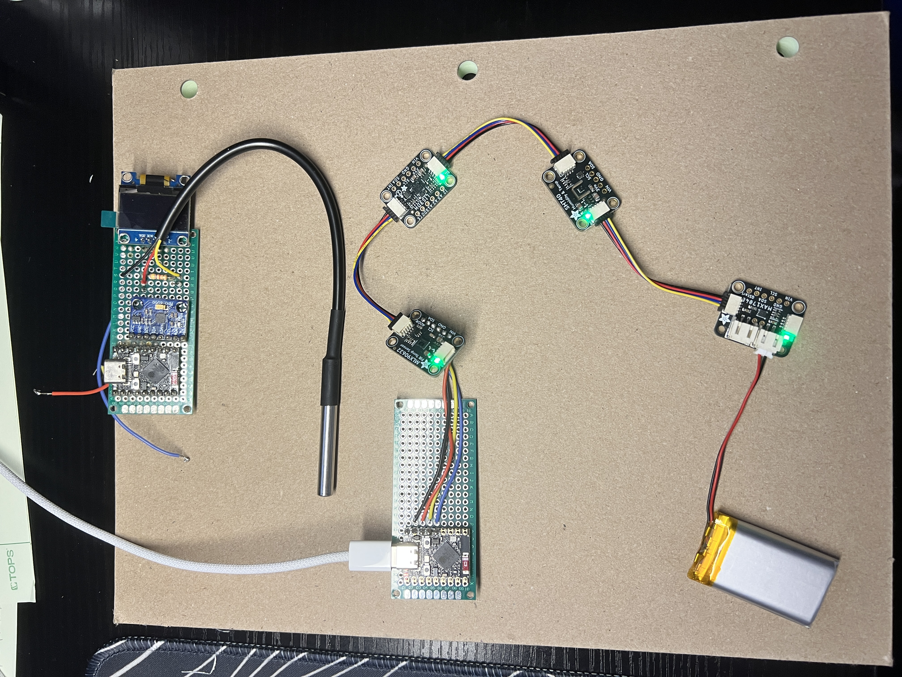

EarlyEar
A low power cattle ear tag for early detection of Bovine Respiratory Disease
Bovine Respiratory Disease is the most economically significant illness in the cattle industry. By the time an animal shows visible symptoms, the infection is usually a day or more along. EarlyEar is a battery powered ear tag that watches ear temperature and movement continuously, looking for the physiological changes that come before visible signs. It has gone from a breadboard sketch to a bench validated second prototype drawing a thirtieth of the current the first one did.
Why Build This
Commercial ear tag monitors already exist, which is the point. The demand is proven and the engineering problem is well defined. Merck Animal Health's SenseHub and 701x's Smart Tag both monitor cattle behavior and health at scale, and both demonstrate that watching individual animals continuously changes outcomes.
What they don't do is exist at a price or scale that makes sense for a show cattle operation with a dozen head. EarlyEar isn't a competitor to those systems. It's an exercise in building the same class of instrument from first principles, on a student budget, and understanding every tradeoff that goes into one.

The Problem
BRD accounts for the majority of feedlot cattle illness and a significant share of mortality. The difficulty is that cattle instinctively mask illness, so by the time a stockman spots a sick animal, the infection has typically been progressing for a day or more. Early treatment is dramatically more effective than late intervention, but catching that window by eye at scale is close to impossible.
The two most reliable early indicators are a rise in body temperature and a measurable drop in movement. A tag that watches both continuously, and flags deviation from that individual animal's baseline rather than a species wide threshold, could move detection forward by a day or two.
Version 1: A Working Prototype That Wouldn't Last a Day
The first build did what it was supposed to. A DS18B20 probe read ear temperature, an MPU-6050 tracked movement, and an OLED gave a live readout at the bench. It streamed over Bluetooth to a Python script on a laptop. As proof the concept worked, it was fine.
As a device meant to live on an animal, it wasn't. It never slept, the display stayed lit, and the radio stayed up. Measured on the bench it drew roughly 90 mA, which on a 400 mAh cell is about three and a half hours. A tag you have to recharge before lunch is not a tag.


Those first field readings were as useful as the bench work. Ear canal hair is functional. It keeps insects and debris out, and it also happens to be opaque to the wavelengths an infrared sensor reads. The sensor was measuring hair somewhere between skin and ambient temperature, not tissue. That finding drove the sensor selection for V2 and reframed the accuracy target: this is a fever detector, not a thermometer, and the figure of merit is repeatability against an animal's own baseline rather than absolute agreement with a rectal reading.

Version 2: Rebuilding Around the Power Budget
The second generation was designed backwards from the constraint that killed the first one. Every component was chosen for what it draws when idle, and the architecture changed so that idle is where the device spends nearly all its time.
- The processor wakes for a few seconds every five minutes and is otherwise off. BRD fever develops over hours, so rapid polling bought nothing clinically and cost everything electrically.
- An MLX90632 replaced the DS18B20. It offers medical grade infrared thermometry accurate to 0.2 C, with under 2.5 uA of sleep current against the previous sensor's continuous draw.
- A LIS3DH replaced the MPU-6050, bringing microamp class accelerometry and a hardware FIFO, so motion can be buffered while the processor sleeps.
- An SHT40 was added for ambient temperature and humidity. Together those give the Temperature Humidity Index, the standard livestock heat stress metric, so one part bought a second useful output channel.
- A MAX17048 fuel gauge reports true state of charge rather than raw voltage at roughly 3 uA. A naive resistor divider for battery sensing would have burned more than the sleep current target by itself.
- The display came out. The OLED was a development convenience, and on a deployed tag nobody is reading it while it never stops drawing.


Measuring the Improvement
Claiming a power improvement without measuring it is worthless, so the redesign was characterized at each stage. The complication was that the available multimeter had no microamp current range. Its lowest setting resolved 1 mA, roughly fifty times coarser than the currents of interest.
The workaround was to stop using it as an ammeter. A known resistor in the battery's return path turns a current measurement into a voltage measurement, and the same meter resolves 1 mV. Across a 10 kOhm shunt that is 0.1 uA of resolution, better than most dedicated microamp ranges. Sizing the resistor per measurement keeps the reading in a usable window without dropping enough voltage to brown out the board.
Measured results
- V1, complete with display: about 90 mA continuous
- V1, display removed: about 86 mA, so the OLED accounted for roughly 4 mA driving a sparse text readout
- V2, asleep: 3 mA
A 30x reduction in system current, extending projected field life from under four hours to roughly four days on the same cell.
The remaining 3 mA is a result rather than a floor. Deep sleep stops the processor but leaves the 3.3 V rail energized, so every indicator LED on the microcontroller and the sensor breakouts stays lit through the sleep window, alongside the regulator's quiescent draw. Removing those indicators is a clear path below 500 uA in the next revision, and knowing where the current goes is more useful than a smaller number with no explanation behind it.
Sensor Validation
Before trusting any of it, each channel was checked against a controlled stimulus, one at a time, in a single logged run. A sensor that reads a plausible number is not the same as a sensor that responds correctly. A blind thermopile staring at its own housing produces stable, reasonable looking data indefinitely.
| Channel | Stimulus | Response |
|---|---|---|
| Infrared temperature | Palm at 3 in | 22.9 to 32.5 C, returning to baseline on removal |
| Infrared temperature | Frozen bottle | Tracked well below ambient, confirming response in both directions |
| Humidity | Breath across sensor | 48 to 93 percent RH, with a clean 40 second recovery curve |
| Activity index | Manual agitation | 2 to 500 milli-g, roughly 200:1 against the resting noise floor |
| Battery telemetry | Steady state | 3.955 V reported as 70.9 percent, consistent with the LiPo discharge curve |
The activity result matters most for the application. A resting tag reads 2 to 3 milli-g of motion; gross movement reads around 500. That separation is what makes a reduced activity alert possible at all, and it is measured rather than assumed.
Firmware and Data Pipeline
V1 streamed loosely formatted bytes that a Python script picked apart by position. Fine for a demo, and a silent data corruption risk the moment real data starts arriving. V2 replaced it with an explicit contract: a versioned packed structure with a CRC, a version byte that changes whenever the layout does, and a host decoder that refuses to parse a version it doesn't recognize.
- The accelerometer's raw stream is reduced on the device to a single activity figure, the mean absolute deviation of acceleration magnitude, plus a posture fraction. Transmitting one number instead of fifteen hundred samples saves both radio energy and airtime.
- The Temperature Humidity Index is computed on the tag from the published livestock formula, so the heat stress channel needs no post processing.
- A Python host decoder produces timestamped CSV ready for analysis, with diagnostics separated into a sidecar log and malformed rows rejected rather than silently written.
- Raw bytes are logged alongside the decoded output, so a decoder bug found later can be corrected without recollecting a dataset.
Enclosure Design
The tag body needs to be compact enough to sit on an ear without irritation, rugged enough for a handling environment, and sealed against moisture and debris. A solar panel mounts on an angled bracket, with the angle set so the panel faces skyward at normal grazing head position rather than straight up.
The bracket is the structurally demanding feature: a cantilevered shelf carrying panel weight plus dynamic loading from head movement. FEA will evaluate stress at the bracket root and determine whether the printed geometry needs reinforcement or a revised angle.
 Early concept sketch, tag body with angled solar bracket.
Early concept sketch, tag body with angled solar bracket.
 SolidWorks enclosure model, tag body and bracket geometry.
SolidWorks enclosure model, tag body and bracket geometry.
Development Roadmap
Problem Definition
BRD detection window, physiological indicators, and monitoring requirements identified.
V1 Prototype
Working breadboard build with contact temperature, IMU, OLED readout, and Bluetooth streaming.
Power Characterization
Shunt and DMM instrumentation across both generations. 30x current reduction measured and attributed.
V2 Sensor Stack
Four sensors on one I2C bus, validated against controlled thermal and motion stimuli.
Telemetry Pipeline
Versioned packed struct protocol with CRC, Python host decoder, metrics derived on the tag.
On-Animal Validation
Paired readings against a reference instrument across six head, with ambient logging and a control tag.
Enclosure and FEA
PETG tag body with an aperture that passes infrared; solar bracket structural analysis.
Custom PCB
Carrier board placing bare sensor ICs rather than breakouts, cutting the stack height by most of an order of magnitude.
What I'd Do Differently
Contact thermometry on the ear pinna, insulated on the outboard face, would couple far better than infrared through hair, and a dual sensor heat flux arrangement could extrapolate toward tissue temperature instead of reporting surface temperature. An nRF52 class radio would cut transmit energy substantially against the ESP32, which is generous for a device that talks for three seconds every five minutes.
A custom PCB carrying bare ICs instead of breakout boards would take the assembly from roughly 22 mm thick to under 8. The larger win there is actually a thinner pouch cell and potting instead of a shelled enclosure, not the board itself, which is the kind of thing that only becomes obvious once you have measured the stack.
Updated September 2026. Validation data from animals, CAD renders, and FEA results to follow.